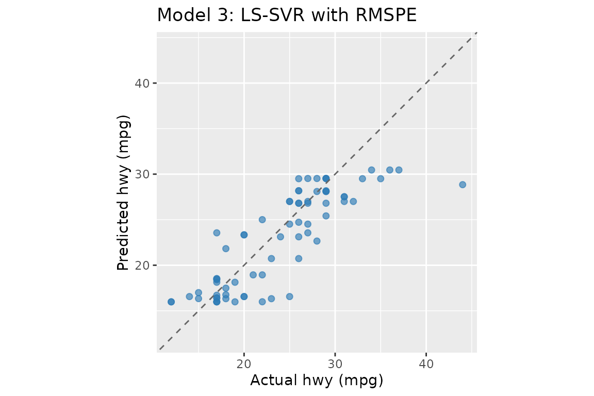
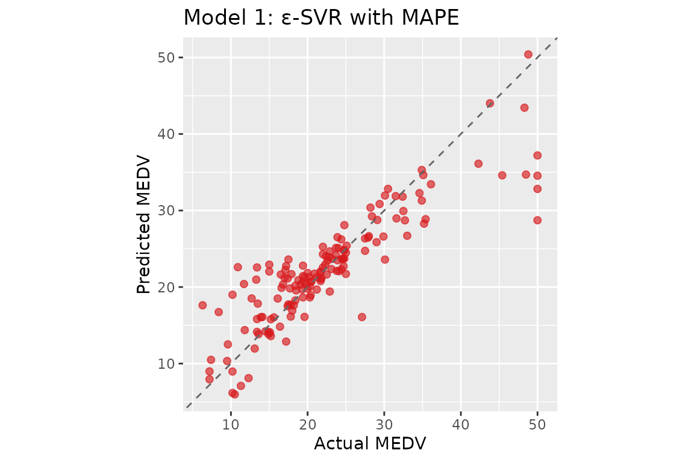

Getting Started with psvr
getting-started.RmdIntroduction
Classical SVR minimises absolute-error losses (MAE, MSE), which are misaligned with the scale-free accuracy criteria standard in forecasting. An error of 1 unit is negligible when the target is 1 000 but large when it is 2.
psvr implements four SVR variants derived from
percentage-error loss functions (Benavides-Herrera et al., 2026),
accessed through the unified psvr() entry point:
| Model | loss |
sym |
Solver |
|---|---|---|---|
| 3 | "rmspe" |
NULL |
linear system |
| 4 | "rmspe" |
+1L / -1L
|
linear system |
| 1 | "mape" |
NULL |
quadratic program |
| 2 | "mape" |
+1L / -1L
|
quadratic program |
sym = +1L enforces even symmetry
f(x) = f(-x); sym = -1L enforces odd symmetry.
Use the symmetric variants only with kernels that satisfy Assumption 3
of the paper (RBF and even-degree polynomial kernels do).
The four legacy fitters (mape_svr(),
mape_sym_svr(), rmspe_lssvr(),
rmspe_sym_lssvr()) remain available as soft-deprecated
wrappers and will be removed in a future release.
All models require strictly positive targets
(y > 0), which is the condition under which percentage
residuals are well-defined.
Installation
# CRAN (once released)
install.packages("psvr")
# Development version from GitHub
remotes::install_github("pbenavidesh/psvr")Boston Housing data
We reproduce the experiments reported in Tables 1–2 of the paper using the Boston Housing dataset (Harrison & Rubinfeld, 1978). All 506 observations have strictly positive median home values (MEDV, in thousands of USD), making MAPE well-defined throughout.
library(psvr)
library(ggplot2)
# Boston Housing is available in the MASS package
data("Boston", package = "MASS")
# Target: median home value (all > 0)
y_all <- Boston$medv
X_raw <- as.matrix(Boston[, setdiff(names(Boston), "medv")])
stopifnot(all(y_all > 0))
cat("N =", nrow(X_raw), " p =", ncol(X_raw),
" y range: [", round(min(y_all), 1), ",", round(max(y_all), 1), "]\n")
#> N = 506 p = 13 y range: [ 5 , 50 ]70 / 30 train–test split
Features are standardised using training-set statistics so that the RBF kernel operates on a comparable scale across all 13 predictors.
set.seed(42)
n <- nrow(X_raw)
tr_idx <- sample(n, floor(0.7 * n))
X_raw_tr <- X_raw[tr_idx, ]; y_tr <- y_all[tr_idx]
X_raw_te <- X_raw[-tr_idx, ]; y_te <- y_all[-tr_idx]
# Standardise: centre and scale by training mean/sd
col_mean <- colMeans(X_raw_tr)
col_sd <- apply(X_raw_tr, 2, sd)
X_tr <- scale(X_raw_tr, center = col_mean, scale = col_sd)
X_te <- scale(X_raw_te, center = col_mean, scale = col_sd)Baseline: linear regression
lm_df_tr <- as.data.frame(X_tr)
lm_df_te <- as.data.frame(X_te)
lm_fit <- lm(y_tr ~ ., data = lm_df_tr)
lm_pred <- predict(lm_fit, newdata = lm_df_te)
cat(sprintf("Linear regression — MAPE: %.2f%% RMSPE: %.2f%% R²: %.4f\n",
mape(y_te, lm_pred), rmspe(y_te, lm_pred), r2(y_te, lm_pred)))
#> Linear regression — MAPE: 16.29% RMSPE: 22.48% R²: 0.7730Model 3: LS-SVR with RMSPE
The LS-SVR formulation replaces the QP with a linear system by using a quadratic penalty on percentage residuals. The dual reduces to:
where .
# make_kernel() returns a closure K(xi, xj) = exp(-||xi - xj||^2 / (2 sigma^2))
K <- make_kernel("rbf", sigma = 1)
# gamma = 5000: regularisation; larger gamma -> smaller Y_Gamma diagonal -> tighter fit
fit_ls <- psvr(X_tr, y_tr, loss = "rmspe", kernel = K, gamma = 5000)
pred_ls <- predict(fit_ls, X_te)
cat(sprintf("LS-SVR RMSPE — MAPE: %.2f%% RMSPE: %.2f%% R²: %.4f\n",
mape(y_te, pred_ls), rmspe(y_te, pred_ls), r2(y_te, pred_ls)))
#> LS-SVR RMSPE — MAPE: 15.46% RMSPE: 27.21% R²: 0.7277
print(fit_ls)
#>
#> LS-SVR with RMSPE loss [psvr_fit]
#>
#> Kernel: RBF (sigma = 1)
#> Gamma: 5000
#> Training obs.: 354
cf_ls <- coef(fit_ls)
# alpha: N dual variables; weight each training point's kernel
# contribution in f(x) = sum_k alpha_k K(x_k, x) + b
# (all N points, no sparsity)
# b: bias / intercept term
# support_data: all N training inputs stored for prediction
cat(sprintf("b = %.4f | alpha range: [%.4f, %.4f]\n",
cf_ls$b, min(cf_ls$alpha), max(cf_ls$alpha)))
#> b = 22.5268 | alpha range: [-59.7517, 43.7321]Model 1: ε-SVR with MAPE
The ε-SVR formulation optimises a QP with sample-dependent box constraints : tighter bounds for small targets, concentrating model capacity on low-magnitude observations.
# C = 10: per-sample box bound |beta_k| <= 100*C/y_k; eps = 1: tube width (% of y_k)
fit_ep <- psvr(X_tr, y_tr, loss = "mape", kernel = K, C = 10, eps = 1)
pred_ep <- predict(fit_ep, X_te)
cat(sprintf("ε-SVR MAPE — MAPE: %.2f%% RMSPE: %.2f%% R²: %.4f\n",
mape(y_te, pred_ep), rmspe(y_te, pred_ep), r2(y_te, pred_ep)))
#> ε-SVR MAPE — MAPE: 15.76% RMSPE: 27.54% R²: 0.7617
cat(sprintf("Support vectors: %d / %d\n", fit_ep$n_sv, fit_ep$n_train))
#> Support vectors: 327 / 354
print(fit_ep)
#>
#> epsilon-SVR with MAPE loss [psvr_fit]
#>
#> Kernel: RBF (sigma = 1)
#> C: 10
#> eps: 1
#> Training obs.: 354
#> Support vectors: 327 (92.4%)
cf_ep <- coef(fit_ep)
# alpha: beta_k = alpha_k - alpha_k* for each support vector;
# non-zero only for training points outside the
# percentage-error ε-tube (sparse)
# b: bias / intercept term
# support_data: training rows corresponding to support vectors only
cat(sprintf("b = %.4f | alpha range: [%.4f, %.4f]\n",
cf_ep$b, min(cf_ep$alpha), max(cf_ep$alpha)))
#> b = 23.1087 | alpha range: [-110.6876, 82.6446]Comparing objectives
results <- data.frame(
Model = c("Linear regression", "LS-SVR RMSPE (Model 3)",
"\u03b5-SVR MAPE (Model 1)"),
MAPE = c(mape(y_te, lm_pred),
mape(y_te, pred_ls),
mape(y_te, pred_ep)),
RMSPE = c(rmspe(y_te, lm_pred),
rmspe(y_te, pred_ls),
rmspe(y_te, pred_ep)),
R2 = c(r2(y_te, lm_pred),
r2(y_te, pred_ls),
r2(y_te, pred_ep))
)
results[, 2:4] <- round(results[, 2:4], 2)
knitr::kable(results, col.names = c("Model", "MAPE (%)", "RMSPE (%)", "R²"),
align = "lrrr",
caption = paste("Test-set performance on Boston Housing",
"(70/30 split, RBF kernel, single run)."))| Model | MAPE (%) | RMSPE (%) | R² |
|---|---|---|---|
| Linear regression | 16.29 | 22.48 | 0.77 |
| LS-SVR RMSPE (Model 3) | 15.46 | 27.21 | 0.73 |
| ε-SVR MAPE (Model 1) | 15.76 | 27.54 | 0.76 |
Both psvr models improve on the linear baseline under their respective percentage-error objectives. The LS-SVR formulation (Model 3) minimises RMSPE directly and achieves the lowest squared-percentage error; the ε-SVR formulation (Model 1) targets MAPE through sample-dependent box constraints on the dual variables. These results are consistent with Tables 1–2 of Benavides-Herrera et al. (2026), where SVR-MAPE reduces test-set MAPE from 15.23% (classical ε-SVR) to around 10% relative to a linear baseline of 17.85%.
Using psvr with tidymodels
All four models are registered as parsnip engines and integrate
seamlessly with the tidymodels ecosystem. This enables hyperparameter
tuning via tune_grid(), resampling via
rsample, and unified model comparison via
workflow_set().
See the tidymodels workflow
article for a complete example using psvr_rmspe_rbf() with
tune_grid() and data-driven hyperparameter ranges via
rbf_sigma_psvr_data(). The When to Use Percentage-Error SVR
article shows a full workflow_set() comparison of all four
models against standard baselines.
References
Harrison, D. & Rubinfeld, D. L. (1978). Hedonic prices and the demand for clean air. Journal of Environmental Economics and Management, 5(1), 81–102.
Benavides-Herrera, P., Álvarez-Álvarez, G., Ruiz-Cruz, R., & Sánchez-Torres, J. D. (2026). A unified family of percentage-error support vector regression models with symmetric kernel extensions. Mathematics, MDPI. (under review)